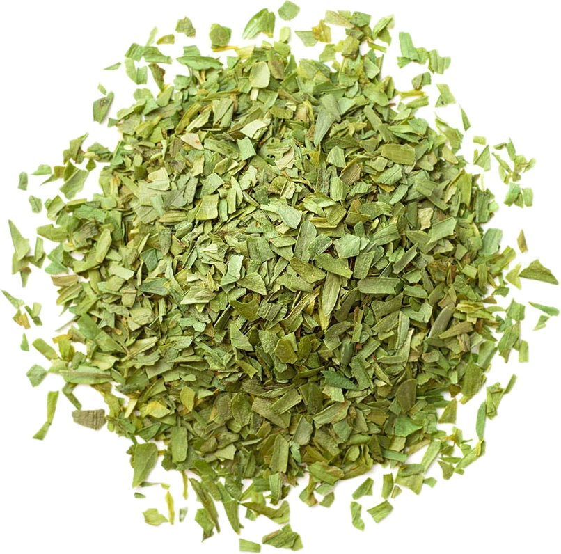

Artemisia dracunculus
Overview
Tarragon is an aromatic herb in the Asteraceae family, native to Eurasia. It has long, narrow leaves and produces small yellow or white flowers and is prized for its delicate, anise-like flavor and aroma. Tarragon is commonly used fresh or dried as a culinary herb and flavoring.
Cultural Overlap
Tarragon is used in cuisines around the world, particularly in French, Russian, and Mediterranean cuisines. It is used to flavor sauces, dressings, marinades, soups, and egg dishes, as well as chicken, fish, and vegetables. Tarragon also has cultural significance in traditional medicine and folklore, where it is believed to have various health benefits and protective properties.